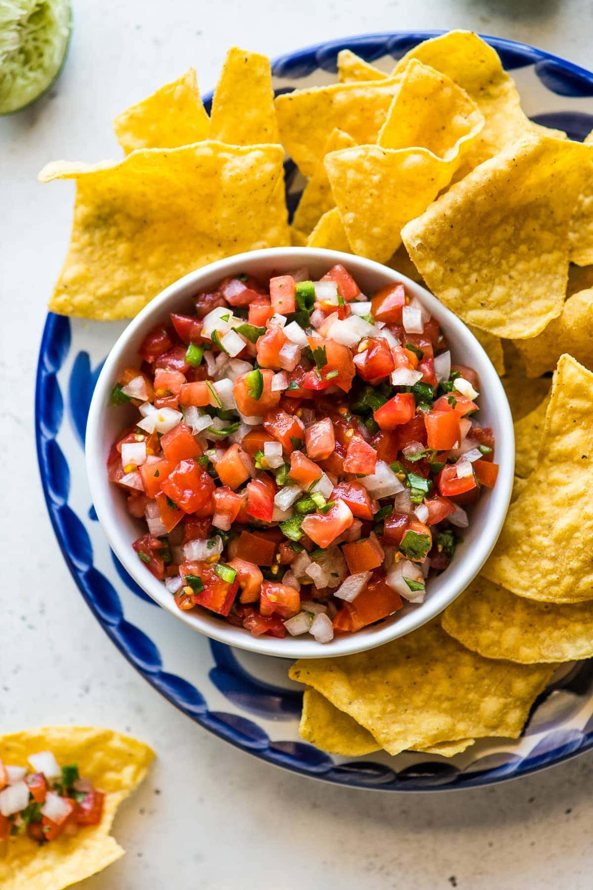

Pico de Gallo

Pico de gallo is an authentic Mexican salsa made with a handful of fresh vegetables that can be eaten as an appetizer or with other Mexican dishes that need some acidity and brightness.
It pairs nicely with carnitas and grilled meats, and in tacos, fajitas, and burrito bowls.
Ingredients
- tomatoes
- onions
- cilantro
- jalapeños
- lime juice
- salt
Steps
- Pico de gallo is a “salsa cruda”, or fresh salsa, which means no cooking is required! It’s super simple to make and just requires some dicing and mixing.
The secret to making the best pico de gallo is letting it rest for a bit before digging in. I recommend letting it rest in the refrigerator for 2-4 hours to let all the flavors meld together. Of course that’s not required and it can be served immediately, but I personally think the flavor is even better once it has been resting for a little while!